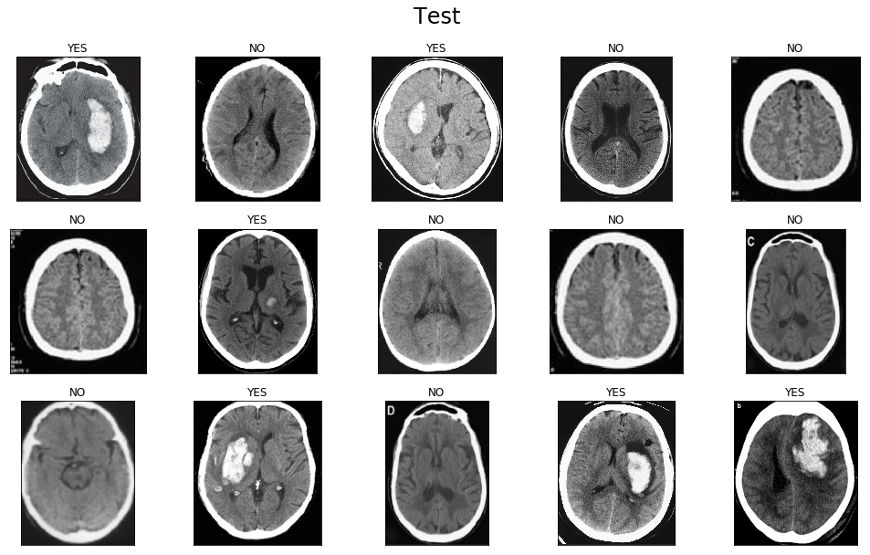

VGG16 Binary Classification
Sprache: Python

Das ist mein erstes kaggle kernel.
Mit diesem kernel wollte ich zwischen MRI-Scans mit oder ohne einen Tumor unterscheiden.
Zum Schluss hatte ich eine Accuracy von 85 %.

Das ist mein erstes kaggle kernel.
Mit diesem kernel wollte ich zwischen MRI-Scans mit oder ohne einen Tumor unterscheiden.
Zum Schluss hatte ich eine Accuracy von 85 %.
Dieses Skript wurde von diesem Tutorial inspiriert.
Es verfügt über command line arguments und ermöglicht das Speichern von dem neu generierten Foto (das hat für mich in den Tutorial nicht funktioniert).
Dieses Experiment hat mir beim Verstehen von neuronalen Netzwerken geholfen, da dieses etwas anderes war als Klassifizierung.

Nachdem ich mein erstes MNIST neuronales Netzwerk gebaut habe (99.2 % accuracy), wollte ich wissen, was dieses falsch eingestuft hat.
Dieses Skript macht ein Video, das die falsch eingestuften Ziffern im Slow Motion darstellt. Das Video zeigt auch, was korrekt oder falsch ist und was das neuronale Netzwerk erraten hat und wie sicher es war im Gegensatz zu der Wirklichkeit.
(P steht for Predicted - Erraten)